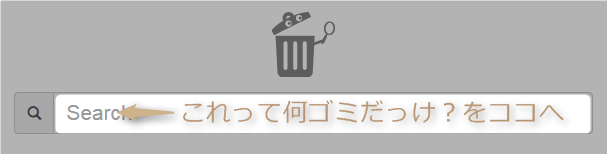

このサイトについて
ゴミ分別検索さん-三重県津市版何をするの？
「このゴミは何の日に出せば良いのかな？」と言うのを探してくれるサイトです。
上部キーワード欄に捨てたい物を入れると、何ゴミかを教えてくれます。
ゴミ分別データについて
ゴミ分別の情報に関してはGithubで管理しています。
日本語以外のデータに関しては機械翻訳の為、精度は良くありません。翻訳間違い、年度更新等でデータが更新されてない などありましたら、一部分でもかまいませんので、是非pull requestしてください。下記のありがとう欄に追加させていただきます。
また、csvデータをメールで送っていただければ、折を見て反映しておきます。
ゴミ分別データ(csv) / Github：https://github.com/koike-moyashi/gomi_tsu
ありがとう：○○さん（○○語翻訳）/homepage/twitterなど
元データについて
このサイトは、三重県津市のオープンデータライブラリ「みんなのデータ」を改変して利用しています。
津市 ごみ分別表 / 2015-04
つくった人
いしぐろ＠もやし工房 / 三重県津市美里町免責事項
津市のオフィシャルなサイトではありません。
このサイトの文章・情報等に基づいて被ったいかなる被害についても、 一切責任を負いません。予めご了承下さい。